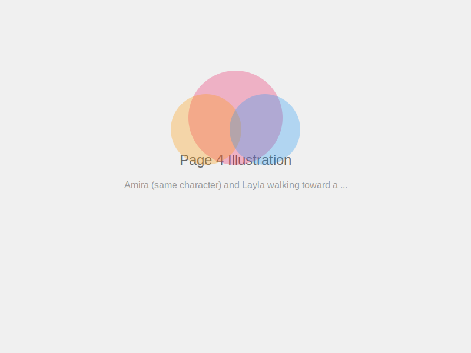
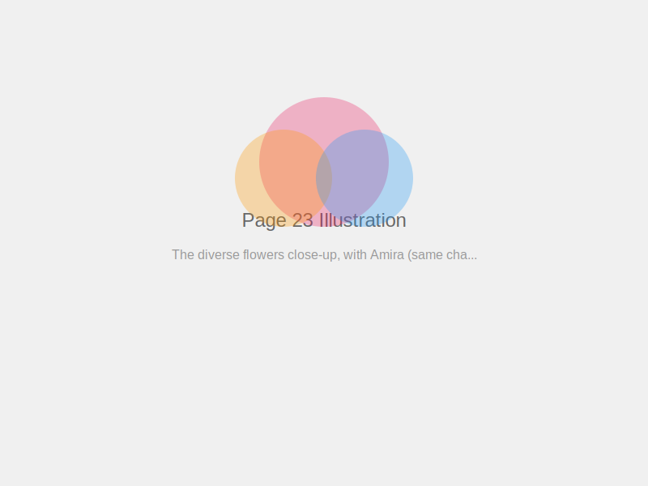

Amira's Amazing Adventure
A 32-Page Story of Discovery and Friendship
By NoorStudio QA Team
Illustrations: AI-Generated (Consistent Character System)
Amira's Amazing Adventure
A 32-Page Story of Discovery and Friendship
Copyright © 2026 NoorStudio QA Team
All rights reserved.
Generated with NoorStudio
Character consistency powered by AI
Once upon a time in the beautiful city of Dubai, there lived a cheerful girl named Amira. She had bright, curious brown eyes and always wore her favorite pink hijab with little golden stars on it.
1
Amira lived with her loving parents and her little brother Zaid in a cozy apartment near the Burj Khalifa. Every morning, she would wake up excited for a new day of adventure.
2
Her best friend was Layla, who lived in the same building. Layla had long dark hair and wore a blue dress with flowers. Together, they were the best of friends.
3

One sunny morning, Amira and Layla decided to explore the park near their neighborhood. They had heard tales of a mysterious garden hidden behind the tall hedges.
4
'Do you think we'll find it?' Layla asked. Amira's eyes sparkled with determination. 'We won't know unless we try!' she replied with a big smile.
5
They walked through the park, past the playground where children laughed, past the fountain where birds splashed, until they found a hidden pathway covered in climbing jasmine flowers.
6
The pathway led to a beautiful garden gate covered in vines. 'This must be it!' Amira whispered. Her heart beat with excitement as she gently pushed the gate open.
7
Inside the garden was the most amazing sight they had ever seen! Colorful butterflies danced among roses, tulips, and orchids. A small fountain bubbled peacefully in the center.
8
Sitting on a bench near the fountain was an elderly woman with kind eyes and a warm smile. She wore a white hijab and waved them over. 'Welcome, young explorers!' she said.
9
The woman introduced herself as Grandmother Fatima, the keeper of the secret garden. 'I've been waiting for curious hearts like yours,' she said with a twinkle in her eye.
10
'This garden has special flowers,' Grandmother Fatima explained. 'Each one teaches a lesson about being a good person. Would you like to learn their secrets?'
11
Amira and Layla nodded eagerly. Grandmother Fatima stood and led them to a cluster of bright yellow sunflowers. 'These teach us about gratitude,' she said.
12
'Just like sunflowers turn toward the sun, we should always turn our hearts toward the blessings in our lives. What are you grateful for, Amira?'
13
Amira thought for a moment. 'I'm grateful for my family, my best friend Layla, and for beautiful days like this!' she said with a bright smile.
14
Next, they visited the rose garden. 'These roses teach us about kindness,' Grandmother Fatima explained. 'Even though they have thorns to protect themselves, they give us beautiful flowers and sweet fragrance.'
15

'True kindness,' she continued, 'means being gentle and helpful, even when things are difficult. It means choosing to do good even when no one is watching.'
16
They walked to a patch of lavender flowers swaying in the breeze. 'These teach us about patience,' Grandmother Fatima said. 'See how they grow slowly but beautifully?'
17
'Good things take time,' she explained. 'Whether learning a new skill or growing into our best selves, we must be patient like these lovely flowers.'
18
Near the fountain, they found white jasmine flowers climbing a trellis. 'Jasmine teaches us about modesty and humility,' Grandmother Fatima said.
19
'These flowers don't shout for attention, but their beautiful fragrance fills the whole garden. True goodness doesn't need to boast—it speaks for itself.'
20

As the afternoon went on, they learned about the courage of the tall palm trees, the honesty of the clear fountain water, and the generosity of the fruit-bearing orange trees.
21
Finally, they reached a special spot where flowers of many colors grew together in perfect harmony. 'This garden's greatest lesson,' Grandmother Fatima said.
22

'Just like these flowers are different but grow together beautifully, people from different backgrounds can live together in peace and friendship if they choose kindness and respect.'
23
Amira looked at Layla and smiled. Even though they were different, they were the best of friends. 'I understand now,' Amira said. 'The garden is like the whole world!'
24
Grandmother Fatima smiled warmly. 'You have learned well, dear children. This garden will always be here for you, whenever you need to remember these lessons.'
25
'Can we come back tomorrow?' Layla asked hopefully. 'Of course,' Grandmother Fatima replied. 'The garden welcomes all who seek to learn and grow.'
26
As Amira and Layla walked home through the park, they talked excitedly about everything they had learned. The world seemed brighter and full of possibilities.
27

That evening at dinner, Amira told her family about the secret garden and its beautiful lessons. Her parents listened with proud smiles.
28
'You've discovered something very special, habibti,' her mother said. 'The most important gardens are the ones we grow in our hearts.'
29
That night, before bed, Amira looked out her window at the stars above Dubai. She thought about all the wonderful lessons: gratitude, kindness, patience, modesty, and harmony.
30

She wrote in her journal: 'Today I found a secret garden that taught me how to grow a beautiful garden in my own heart. I will try to practice these lessons every day.'
31
And from that day on, whenever Amira faced a challenge, she remembered the secret garden and the lessons it taught. She grew into a kind, patient, grateful person who made the world a little brighter—just like the flowers in Grandmother Fatima's garden. The End.
32
About This Book
This 32-page children's book was created using NoorStudio's AI-powered publishing platform.
Character consistency maintained across all illustrations using advanced AI technology.
For more information, visit NoorStudio.com